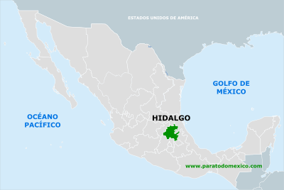

Que es Hidalgo
Hidalgo es un estado de México ubicado en la región centro-oriente del país. Su capital es Pachuca de Soto, una ciudad conocida por su historia minera y su famoso Reloj Monumental. El estado fue creado en 1869 y lleva su nombre en honor a Miguel Hidalgo y Costilla, el iniciador de la lucha por la independencia de México. En Hidalgo viven más de tres millones de personas y se habla tanto español como lenguas indígenas, principalmente otomí, náhuatl y tepehua.
El territorio hidalguense tiene una gran variedad de paisajes, desde montañas, bosques y ríos, hasta zonas áridas y semidesérticas. Es famoso por sus aguas termales, como las Grutas de Tolantongo, sus formaciones naturales como los Prismas Basálticos en Huasca, y por sus Pueblos Mágicos, como Real del Monte, Zimapán, Huichapan y Huasca de Ocampo. Además, Hidalgo es muy importante por su historia minera, especialmente en la región de Pachuca y Real del Monte, donde también se conserva la influencia de los inmigrantes ingleses que llegaron en el siglo XIX.
La cultura de Hidalgo es muy rica. En muchas comunidades todavía se conservan las tradiciones indígenas, como las danzas, los bordados coloridos, la música regional y las fiestas religiosas. También es muy conocida su gastronomía, con platillos como la barbacoa, los pastes, los mixiotes, los ximbos y bebidas tradicionales como el pulque. Las ferias, los carnavales y las celebraciones patronales son una parte importante de la vida de los pueblos hidalguenses.
En cuanto a su economía, Hidalgo se dedica a la agricultura, la ganadería, el turismo y la industria. Tiene una gran tradición minera, pero también ha desarrollado parques industriales y zonas de desarrollo tecnológico. Es un estado que combina lo moderno con lo tradicional, y que sigue siendo uno de los más importantes en cuanto a preservación cultural indígena.